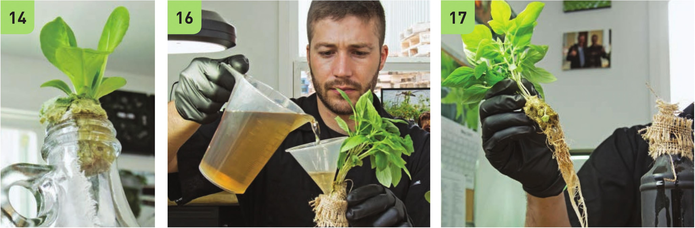

Optional Wicking Strip A wicking strip is useful in bottles that are tall and skinny or with crops that grow slowly. The following steps use a clear bottle for demonstration purposes, but using a clear bottle for growing a crop is not recommended because it will encourage algae growth. 12 Cut burlap or cloth into a strip long enough to reach the bottom of the bottle and approximately as wide as the seedling plug (usually 1 " to 2" wide). 13 String the wicking strip through the bottle opening. 14 Use the seedling plug to hold the wicking strip in place. 15 Leave enough stone wool exposed to make removal easy when refilling the bottle with nutrient solution. 16 A funnel can make it possible to refill the bottle without fully removing the stone wool plug. This can help reduce the potential of damaging roots when removing and reinserting a plug with a developed root system. 17 If not using a funnel, very carefully lift the plug out of the bottle. 18 Fill the bottle with nutrient solution. For young plants with poorly developed roots, it is best to fill to nearly the top of the bottle. For older plants with larger root systems, it is best to fill to three-fourths full so the roots have access to a balance of air and nutrient solution. Very carefully reinsert the plug back into the bottle after refilling. Make sure the roots are submerged in the nutrient solution. Maintenance Most of the crops that are appropriate for hydroponic bottles are fast growing and may not require a lot of maintenance during their growth cycle. It is possible to grow longer-term crops that have multiple harvests, such as basil, as long as the bottle is kept over half full with nutrient solution. It is a good practice to clean out the bottle and refill with fresh nutrient solution every month to avoid nutrient imbalances in the solution. 48 DIY HYDROPONIC GARDENS
